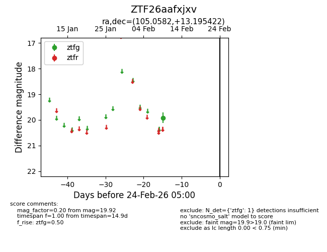
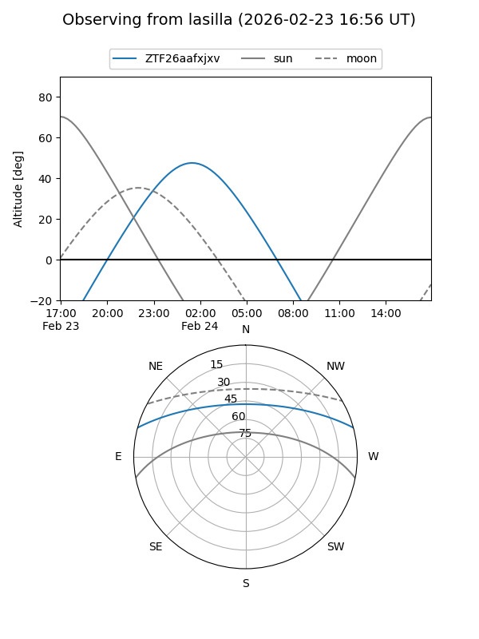
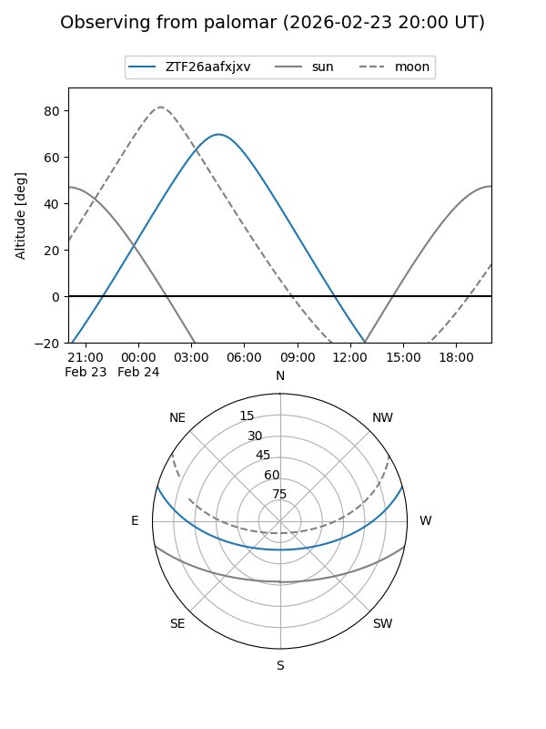

ZTF26aafxjxv
Target ZTF26aafxjxv at 2026-02-24 09:08
Aliases and brokers:
FINK: link
Lasair: link
ALeRCE: link
alt names
ZTF26aafxjxv (ztf,fink_ztf)
Coordinates:
equatorial (ra, dec) = 105.0582,+13.19542
equatorial (HMS+DMS) = 07:00:13.96,+13:11:43.52
galactic (l, b) = (202.1012,+7.89347)
Flags:
Photometry:
last ztfg=19.92
1 ztfg detections
Lightcurve

Visibility


Additional plots